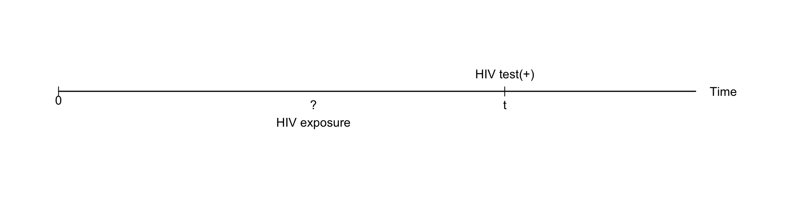
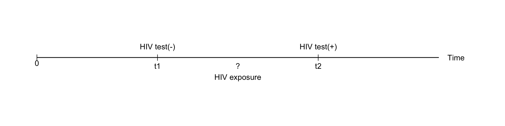
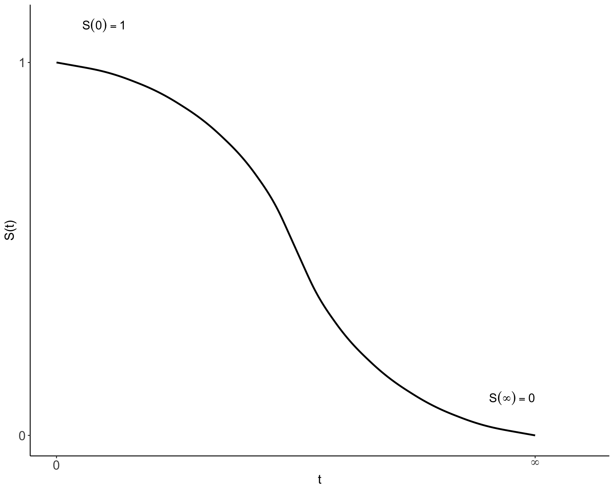
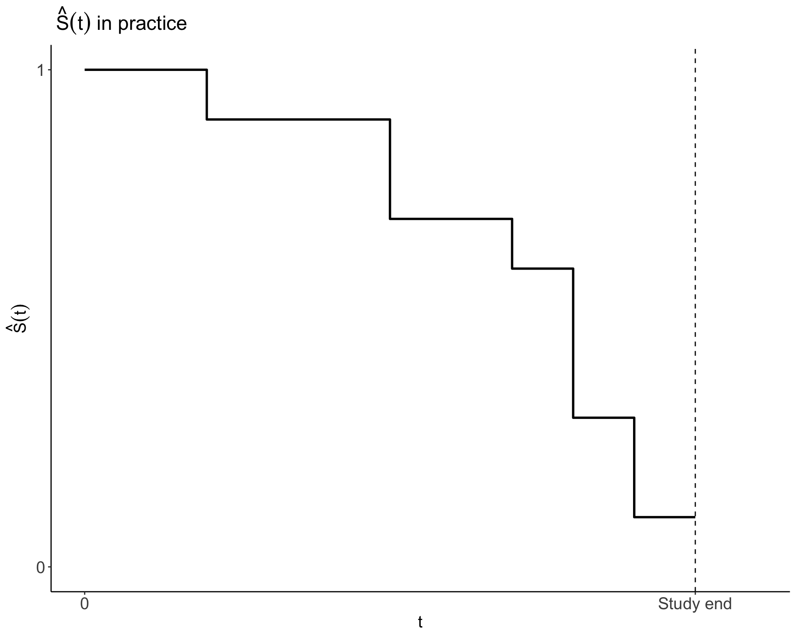
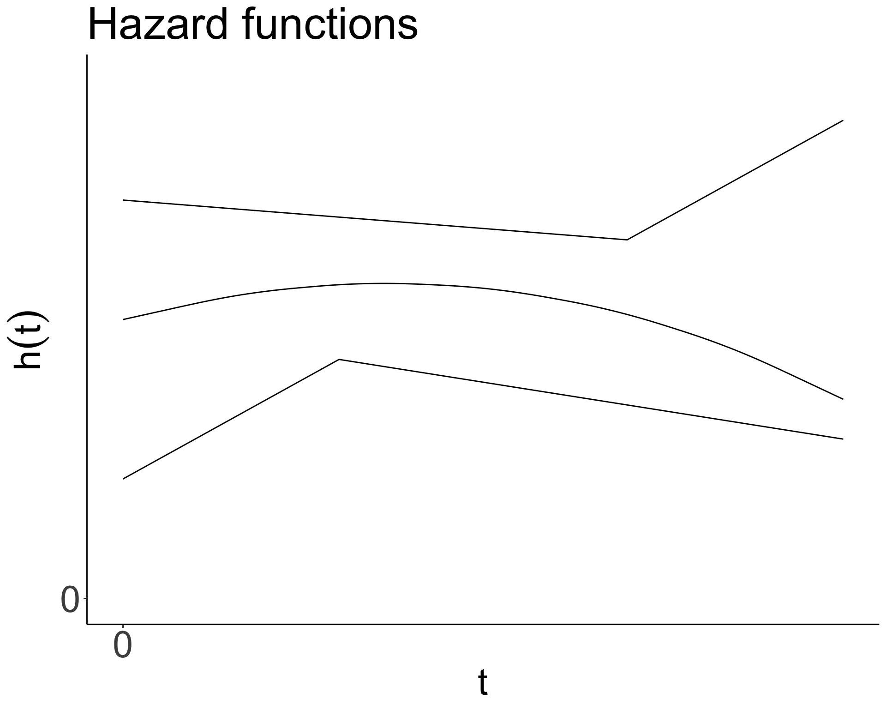
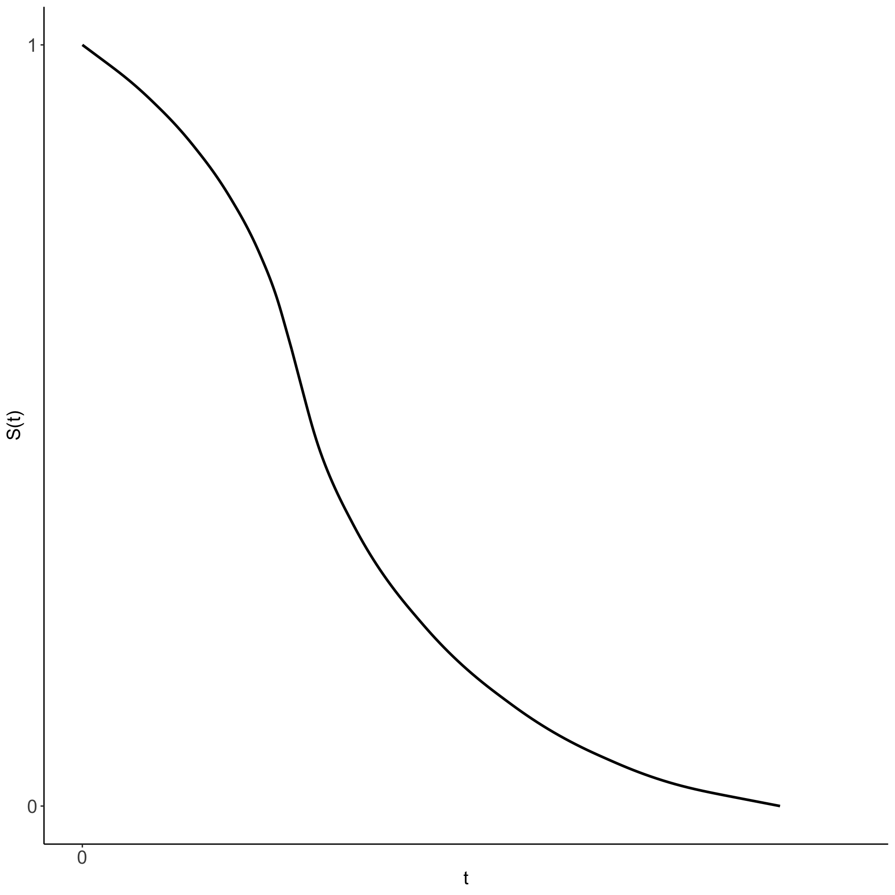
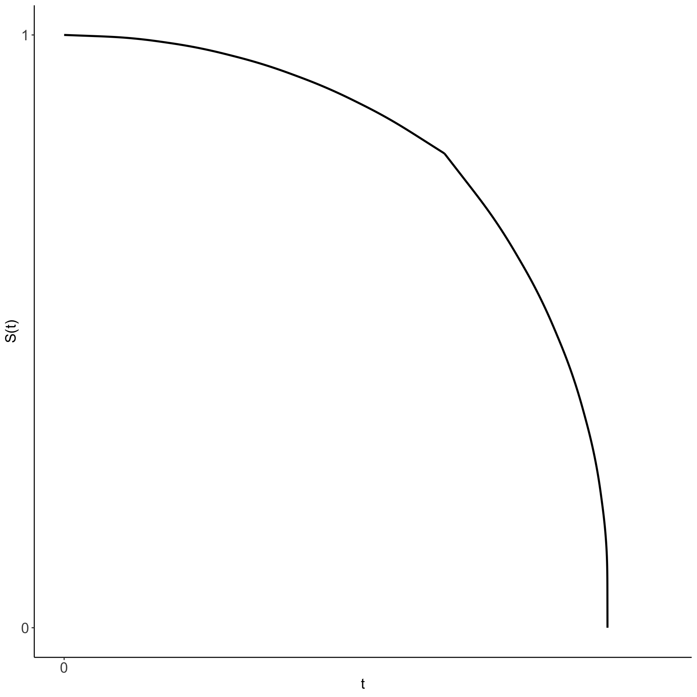

문건웅
문건웅
가톨릭대학교 의과대학 교수
성빈센트병원 순환기내과 재직
CRAN package donor - 13 packages
Web-R.org 운영
https://github.com/cardiomoon/survivalWorkshop
생존분석 소개 : chap2.html
Kaplan-Meier 생존곡선과 로그순위검정 : chap3.html
콕스비례위험모형 : chap4.html
어떤 사건이 일어날 때까지의 시간을 반응변수로 하는 통계적인 방법
어떤 사건이 일어날 때까지의 시간을 반응변수로 하는 통계적인 방법
실패가 일어날 때까지의 생존시간을 반응변수로 하는 통계적인 방법
생존시간에 대한 어느 정도의 정보는 있으나 정확한 생존시간을 모를 때 발생
이 중 중도절단 자료는 ?
| name | Suvival time | status |
|---|---|---|
| A | 5.0 | 1 |
| B | 12.0 | 0 |
| C | 3.0 | 0 |
| D | 8.0 | 0 |
| E | 6.0 | 0 |
| F | 3.5 | 1 |


\[T=survival\ time(T\geq 0)\]
\[T > t=5\]
\[S(t)=survivor\ function\] \[h(t)=hazard\ function\]
\[S(t) = P(T > t)=1-P(T \leq t),\ 0<t<\infty\]
| \(t\) | \(S(t)\) |
|---|---|
| 1 | \(S(1)=P(T>1)\) |
| 2 | \(S(2)=P(T>2)\) |
| 3 | \(S(3)=P(T>3)\) |
| . | . |
| . | . |
| . | . |


\[h(t)=\lim_{\Delta t\to0}\frac{P(t < T < t +\Delta t\ \ |\ \ T > t)}{\Delta t}\]
주어진 사건 \(B\)가 일어났다는 가정하에 \(A\)가 일어날 확률을 말한다.
어떤 대상이 특정한 시간 \(t\)보다 더 생존하였다고 가정할 때 그 대상이 그 특정한 시간으로부터 아주 짧은 시간 간격 안에 실패할 확률
확률이 1/3, 시간간격이 12시간이라면
| \(P\) | \(\Delta t\) | \(P/ \Delta t = rate\) |
|---|---|---|
| \(1/3\) | \(1/2\ day\) | \((1/3) \div (1/2)=0.67/day\) |
| \(1/3\) | \(1/14\ week\) | \((1/3)\div(1/14)=4.67/week\) |
\[h(t)=\lim_{\Delta t\to 0}\frac{P(t < T < t +\Delta t\ \ |\ \ T > t)}{\Delta t}\] 시간간격(\(\Delta t\))이 점점 짧아져 0에 가까워질 때 주어진 시간 \(t\)에서의 순간적인 실패가능성을 이야기한다.

\[F(t)=P(T \leq t)=1-S(t),\ 0<t<\infty\]
\[f(t)=\frac{d}{dt}F(t)=-\frac{d}{dt}S(t)\]
\[h(t)=\frac{f(t)}{S(t)}\]
\[H(t)=\int_0^th(u)du\]
일반적으로 생존함수와 누적함수는 다음과 같은 관계를 갖는다.
\[S(t)=exp[-\int_0^th(u)du]=exp(-H(t))\]
\[h(t)=-[\frac{dS(t)/dt}{S(t)}]=-\frac{S'(t)}{S(t)}=-\frac{d}{dt}log(S(t))\]
따라서 \(S(t)\) 를 알면 \(h(t)\)를 구할 수 있고 \(h(t)\)에서 \(S(t)\)를 구할 수 있다. 실제 데이터 분석에서는 컴퓨터 프로그램이 \(S(t)\)에서 \(h(t)\)로 수학적으로 변환해주므로 실제 생존분석을 하는 사람이 이 공식을 사용할 일은 없다. 여기서 기억해야 하는 것은 \(S(t)\)나 \(h(t)\) 둘 중 하나를 알면 다른 하나도 계산할 수 있다는 것이다.
생존분석의 기본적인 목표는 세가지이다.


| 모형 | 반응변수 | 효과추정 |
|---|---|---|
| 생존분석 | time to event(with censoring) | Hazard ratio \(e^\beta\) |
| 선형회귀 | 연속형변수(예:자동차의 연비) | 회귀계수 \(\beta\) |
| 로지스틱회귀 | 이분형변수(예: 사망/생존) | odds ratio \(e^\beta\) |